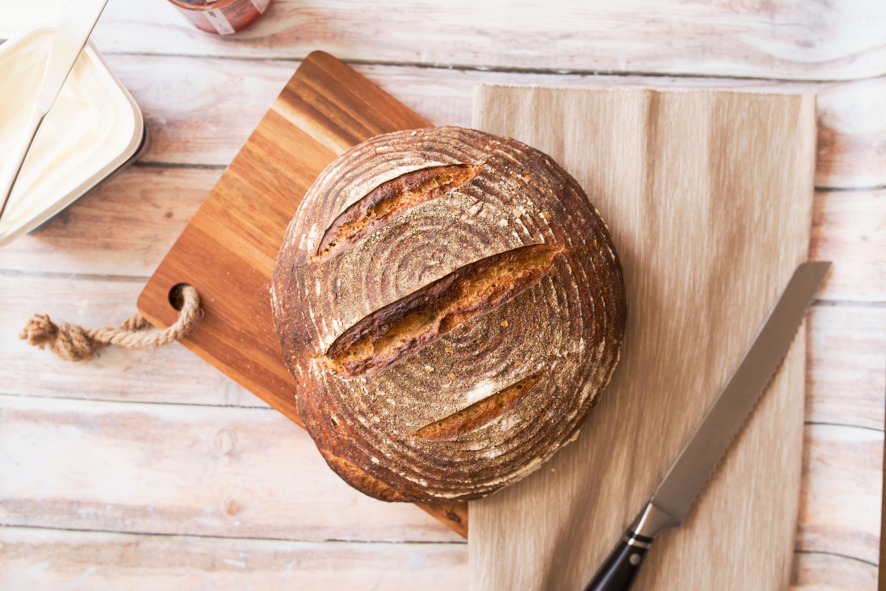

http://www.w3.org/TR/html4/loose.dtd">
BAKE - Bread
- Cake
- Bread
- Dessert
Bread

빵을 굽는 일은 매우
즐겁고 창의적인 일이다
그리고 내 경우 스트레스 해소를 하고 싶을때
부엌에서 베이킹을 하면
반죽을 하고 빵을 성형하고 오븐에 넣어 구워내면서
스트레스가 풀려있는 것을 발견할 수 있다.
또한 베이킹은 그 산출물을
먹는 가족들에게도 기쁨을 주는 일이기도 하다.
매일 매일 구워내는 신선한 빵을 먹는다는 것은
수퍼에서 사온 오래된 빵을 먹는것보다는 훨씬 즐거운 일이다
때로는 힘든 일로부터, 공부로 부터 받은 우울감을
달콤한 빵이나 케이크를 먹으면서 위로를 받을 수 도 있다.